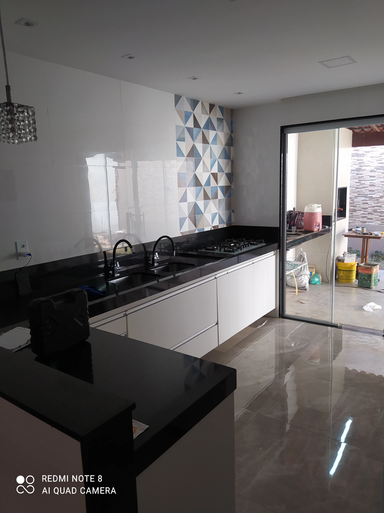

01
Reformas residenciais · Grande Vitória
Reforme sua casa com planejamento e acompanhamento técnico.
Da demolição ao acabamento, a D'Martins coordena a reforma para você escolher melhor, controlar as etapas e ter um resultado que valoriza o imóvel.
- Engenheiro civil responsável
- Mais de 15 anos de experiência
- Atendimento em Serra e Grande Vitória

Resultados reais
Veja duas transformações realizadas pela D'Martins.
As imagens abaixo mostram a evolução de uma cozinha e de uma fachada em obras de reforma acompanhadas pela equipe.
02
Reforma de fachada
Escolha de materiais
O material certo é o que combina com o uso, o orçamento e a manutenção.
Uma boa reforma não começa pela aparência. Antes de escolher revestimento, tinta ou bancada, avaliamos o ambiente, a circulação, a umidade e a rotina de quem vai usar a casa.
Priorize o uso do ambiente
Cozinhas e áreas externas pedem materiais resistentes à umidade e ao desgaste. Banheiros exigem superfícies seguras, fáceis de limpar e adequadas ao contato com água.
Compare custo e ciclo de vida
O menor preço nem sempre representa economia. Consideramos instalação, perdas, manutenção e durabilidade para evitar trocas precoces e retrabalho.
Combine desempenho e estética
Revestimentos, iluminação, pintura e marcenaria precisam conversar entre si. O planejamento ajuda a escolher acabamentos coerentes sem comprometer a funcionalidade.
Dica técnica:
peça amostras, confirme os lotes e compre uma margem para recortes e futuras reposições antes de iniciar o assentamento.
Antes de contratar
Uma proposta clara evita surpresas durante a obra.
Ao comparar empresas de reforma, não olhe apenas o valor final. Verifique se a proposta explica o que será feito, quem acompanha o serviço e como as decisões serão registradas.
- Escopo detalhadoConfira demolições, preparação, instalações, acabamentos e o que não está incluído.
- Responsabilidade técnicaConfirme a formação do profissional e quem responde pelo planejamento e pela execução.
- Cronograma e etapasEntenda a sequência dos serviços, os marcos de compra e como serão tratados imprevistos.
- Comunicação acessívelCombine como você receberá atualizações, aprovações e registros do andamento da reforma.
Por que a D'Martins
Experiência de obra para transformar decisões em um resultado seguro.
Responsável técnico
Wellington Carlos Corrêa é engenheiro civil, CREA-ES 50219/D, com mais de 15 anos de experiência na construção civil.
Visão do todo
Integramos planejamento, execução, instalações e acabamento para reduzir retrabalho e alinhar cada escolha ao resultado final.
Atendimento regional
Atendemos Serra, Vitória, Vila Velha, Cariacica e outros municípios da Grande Vitória com contato direto pelo WhatsApp.
Como funciona
Uma reforma organizada do primeiro contato à entrega.
- EntendimentoConversamos sobre o imóvel, suas prioridades e o resultado esperado.
- PlanejamentoDefinimos escopo, etapas, materiais e uma previsão de investimento.
- ExecuçãoA equipe acompanha a obra e mantém você informado sobre cada avanço.
Seu próximo ambiente começa aqui
Conte o que você quer reformar.
Envie uma mensagem pelo WhatsApp e receba orientação sobre os próximos passos.